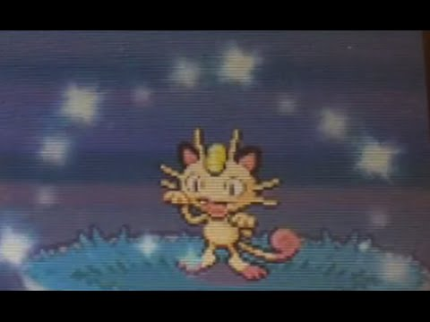

Welcome to the Hobby That Takes Too Much Time and Isn't Guaranteed Success
My Hobby Website is devoted to probably one of the nerdiest subjects you will ever grade. Nonetheless, it still is a fun activity I engage in regularly and enjoy despite its statistics. I have been playing Pokémon since I was very young and have always been enamored by the little monsters that could fit in your pocket. As the franchise developed, I continued to buy and play the newer games that came out. I knew shiny Pokémon existed, but I thought it was more of a glitch in the code or a special event than something that could happen normally in the game. Then, while re-playing through my copy of Pokémon SoulSilver, I stumbled upon a Meowth with slightly different coloring and had sparkles coming off of it. I knew then that it was not a glitch, and I became hooked on Shiny Pokémon.
I started searching on Google about shiny Pokémon, and found so much knowledge to pursue this new fascination of mine that I decided to dedicate a whole game cartridge to hunting them. The contents of this site provide all the shiny Pokémon that I have encountered and how you can start your endeavor if you choose this is something you are interested in.